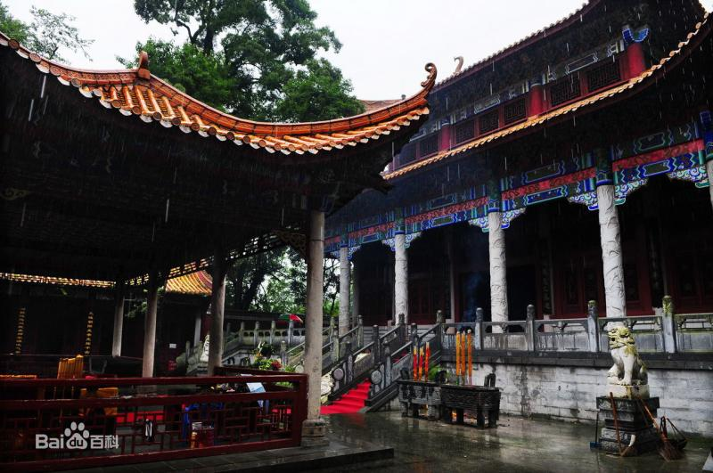
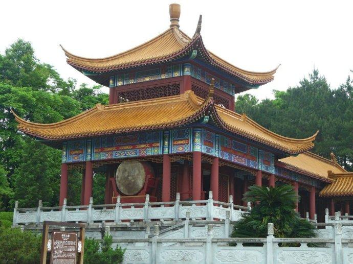
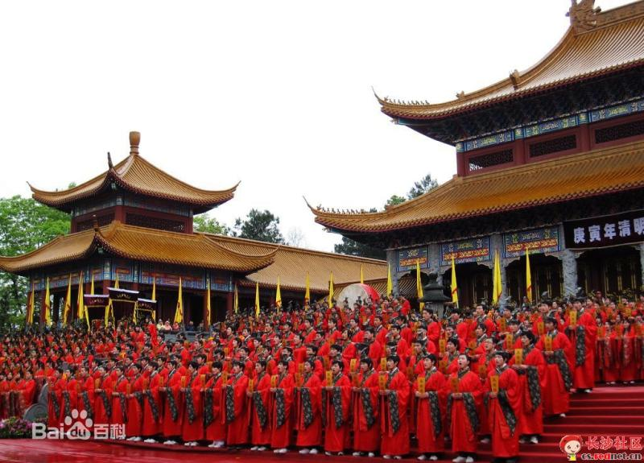
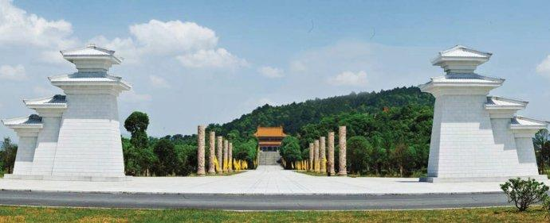
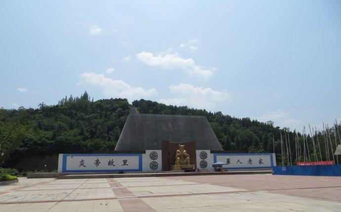
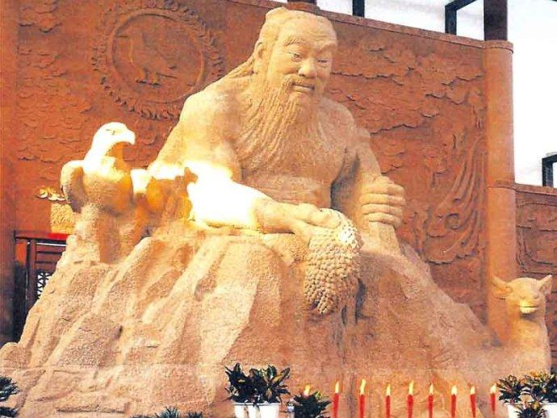

神州第一陵——炎帝陵
发布时间: 2017-05-24 来源 : 网络-
炎帝神农氏“以姜水成”，葬于“长沙茶乡之尾”即现在的湖南省株洲市炎陵县炎帝陵。
炎帝陵是中华民族始祖炎帝神农氏的安息地，享有“神州第一陵”之誉。它坐落于株洲市炎陵县城西19公里处的鹿原陂。
 -
株洲炎帝陵现为国家级风景名胜区、全国重点文物保护单位、全国爱国主义教育示范基地、中华全国归国华侨爱国主义教育基地、 国家AAAA级旅游景区、国家首批非物质文化遗产、湖南十大文化遗产、新潇湘人文八景、海峡两岸交流基地、湖南省最佳景区。
炎帝陵祭典被列入了国家首批非物质文化遗产和被评为全球最具影响力的根亲文化盛事。炎陵是中华民族始祖炎帝神农氏的安寝福地 、全球华人的精神家园。
 -
据史料记载，炎帝神农氏是上古时代姜姓部落的首领，产生于新石器时期，即其上限在1万年左右，其下限距今4800年左右。
炎帝神农氏是中华农耕文化的创始者，为中华民族的始兴和繁衍作出了开创性的伟大贡献。他始作耒耜，教民耕种；遍尝百草，发明医药； 织麻为布，制作衣裳；日中为市，首倡交易；耕而作陶，始造明堂；削桐为琴，始作蜡祭；弦木为弧，剡木为矢，以威天下。炎帝坚忍不拔的 开拓精神、百折不挠的创新精神、自强不息的进取精神、大公无私的奉献精神是中华民族精神的重要组成部分，同时也是中华民族长盛不衰的 力量源泉。
 -
炎帝陵随着历代王朝兴衰更替，炎帝陵庙历尽苍桑，屡毁屡建。有历史记载的较大的修葺有：宋代一次，明代三次，清代九次，民国四次。
近代大规模修葺始于1986年，1988年10月陵殿修复竣工。修复后的炎帝陵按清皇宫建筑格局布置， 陵殿共分四进，一进为午门，二进为行礼亭，三进为主殿，四进为墓碑亭，亭后为墓冢。
  - >
炎帝陵随着历代王朝兴衰更替，炎帝陵庙历尽苍桑，屡毁屡建。有历史记载的较大的修葺有：宋代一次，明代三次，清代九次，民国四次。
千百年来，陵前的祭祀活动历久不衰，俎豆馨香，终年不绝。官吏商贾，文人墨客，多有篡志书史，诗文题咏，而民间群众，则以村俗民风， 故事传闻，留下许多炎帝和炎帝陵的珍贵史料和千古情思。
